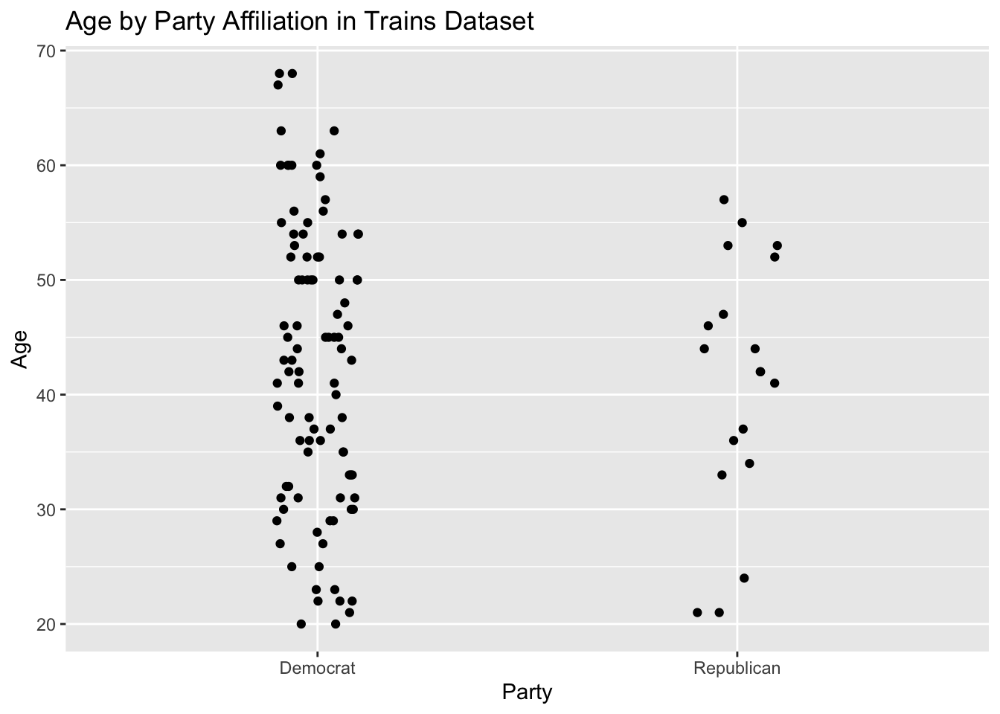

Chapter 8 Two Parameters
We have now introduced almost all of the key themes in the book. The last five chapters are about increasing the complexity of the models we use. In this chapter, we estimate models which involve two parameters.
8.1 EDA for trains
Let’s do some exploratory data analysis (EDA) of the trains data set from the PPBDS.data package. Recall the discussion from Chapter 3. Enos (2014) randomly placed Spanish-speaking confederates on nine train platforms around Boston, Massachusetts. Exposure to Spanish-speakers – the treatment – influenced attitudes toward immigration. These reactions were measured through changes in answers to three survey questions. Let’s load the libraries we will need in this chapter and look at the data.
knitr::opts_chunk$set(echo = TRUE, tidy = FALSE, cache.extra = packageVersion('tufte'))
library(PPBDS.data)
library(tidyverse)
library(broom)
library(rsample)
library(skimr)
library(gt)
library(tidyverse)
library(tufte)## Rows: 115
## Columns: 8
## $ gender <chr> "Female", "Female", "Male", "Male", "Male", "Female", "Fema…
## $ liberal <lgl> FALSE, FALSE, TRUE, FALSE, TRUE, FALSE, FALSE, FALSE, FALSE…
## $ party <chr> "Democrat", "Republican", "Democrat", "Democrat", "Democrat…
## $ age <dbl> 31, 34, 63, 45, 55, 37, 53, 36, 54, 42, 33, 50, 24, 40, 53,…
## $ income <dbl> 135000, 105000, 135000, 300000, 135000, 87500, 87500, 13500…
## $ att_start <dbl> 11, 9, 3, 11, 8, 13, 13, 10, 12, 9, 10, 11, 13, 6, 8, 13, 7…
## $ treatment <fct> Treated, Treated, Treated, Treated, Control, Treated, Contr…
## $ att_end <dbl> 11, 10, 5, 11, 5, 13, 13, 11, 12, 10, 9, 9, 13, 7, 8, 13, 8…Here, we can see variables that indicate each respondent’s gender, political affiliations, age, and income. Additionally, we have variables that indicate whether a subject was in the control or treatment group, and the their attitudes toward immigration both before or after the treatment. You can type ?trains to read the help page for more information about each variable. Let’s restrict attention to a subset of the variables.
It is always smart to look at a some random samples of the data:
## # A tibble: 5 x 4
## age att_end party treatment
## <dbl> <dbl> <chr> <fct>
## 1 56 11 Democrat Treated
## 2 45 11 Democrat Control
## 3 47 8 Republican Control
## 4 63 5 Democrat Treated
## 5 61 9 Democrat Controlatt_end is a measure of person’s attitude toward immigration, a higher number means to a more conservative, i.e., a more exclusionary stance on immigration into the United States. Running glimpse() is another way of exploring a data set.
## Rows: 115
## Columns: 4
## $ age <dbl> 31, 34, 63, 45, 55, 37, 53, 36, 54, 42, 33, 50, 24, 40, 53,…
## $ att_end <dbl> 11, 10, 5, 11, 5, 13, 13, 11, 12, 10, 9, 9, 13, 7, 8, 13, 8…
## $ party <chr> "Democrat", "Republican", "Democrat", "Democrat", "Democrat…
## $ treatment <fct> Treated, Treated, Treated, Treated, Control, Treated, Contr…Pay attention to the variable “type.” Do they make sense? Perhaps. But there are certainly grounds for suspicion. Why are age and att_end doubles rather than integers? Why is party a character variable and treament a factor variable? It could be that these are intentional choices made by the creator of the tibble, i.e., us. These could be mistakes. Or, most likely, these choices are a mixture of sensible and arbitrary. Regardless, it is your responsibility to notice them. You can’t make a good model without looking closely at the data which you are using.
skim from the skimr package is the best way to get an overview of a tibble.
| Name | Piped data |
| Number of rows | 115 |
| Number of columns | 4 |
| _______________________ | |
| Column type frequency: | |
| character | 1 |
| factor | 1 |
| numeric | 2 |
| ________________________ | |
| Group variables | None |
Variable type: character
| skim_variable | n_missing | complete_rate | min | max | empty | n_unique | whitespace |
|---|---|---|---|---|---|---|---|
| party | 0 | 1 | 8 | 10 | 0 | 2 | 0 |
Variable type: factor
| skim_variable | n_missing | complete_rate | ordered | n_unique | top_counts |
|---|---|---|---|---|---|
| treatment | 0 | 1 | FALSE | 2 | Con: 64, Tre: 51 |
Variable type: numeric
| skim_variable | n_missing | complete_rate | mean | sd | p0 | p25 | p50 | p75 | p100 | hist |
|---|---|---|---|---|---|---|---|---|---|---|
| age | 0 | 1 | 42.4 | 12.2 | 20 | 33 | 43 | 52 | 68 | ▆▇▇▇▃ |
| att_end | 0 | 1 | 9.1 | 2.9 | 3 | 7 | 9 | 11 | 15 | ▂▃▇▃▃ |
skim() shows us what the different values of treatment are because it is a factor. Unfortunately, it does not do the same for character variables like party. The ranges for age and att_end seem reasonable. Recall that participants were asked three questions about immigration issues, each of which allowed for an answer which was a strength of agreement between 1 and 5, with higher values indicating more agreement with conservative viewpoints. So, the most liberal possible value is 3 and the most conservative is 15.
Plotting some variables from the dataset is another important practice in exploratory data analysis:
ch8 %>%
ggplot(aes(x = party, y = age)) +
geom_jitter(width = 0.1, height = 0) +
labs(x = "Party",
y = "Age",
title = "Age by Party Affiliation in Trains Dataset")
From this plot, we can gather that there are many more Democrats in this dataset than Republicans. Democrats also span a wider range of ages than Republicans. The mode age for Democrats appears to be 50.
ch8 %>%
ggplot(aes(x = treatment, y = att_end)) +
geom_boxplot() +
labs(x = "Treatment",
y = "Attitude End",
title = "Attitude End by Treatment in Trains Dataset")
On a boxplot, the top and bottom borders of the box denotes the 75th and 25th percentiles, respectively. The line inside the box denotes the mean of the data. Treated individuals have a higher mean att_end than the control group, and a higher distribution in general, with its 25th percentile lining up with the mean of the control group. The control group has an outlier, while the treatment group does not.
8.2 Review of One Parameter Estimation
Recall how we constructed bootstrap distributions for a parameter by sampling with replacement in Chapter 7. Through this bootstrapping process, we were able to construct confidence intervals for a parameter. Remember, confidence intervals are a tool to help us identify parameter uncertainty, which is the degree to which we are confident in these estimates of the unknown (and often unknowable) numbers.
We will once again be using the bootstraps() function from the rsample package. You might think that since we’re shifting to calculating two parameters, we might need to conduct the entire bootstrapping process twice, once for each parameter. However, it’s much, much easier than that. We can actually calculate as many parameters as we need to for each bootstrap sample instead of doing a separate bootstrap for each parameter we want to estimate.
Let’s review the material from Chapter 7 by calculating the confidence interval for both the mean and the 90th percentile of age for Boston commuters. We will build up the code section by section.
First, we select out the only variable we need, with is age, and then create an objects of class bootstraps.
## # Bootstrap sampling
## # A tibble: 1,000 x 2
## splits id
## <list> <chr>
## 1 <split [115/47]> Bootstrap0001
## 2 <split [115/42]> Bootstrap0002
## 3 <split [115/39]> Bootstrap0003
## 4 <split [115/44]> Bootstrap0004
## 5 <split [115/40]> Bootstrap0005
## 6 <split [115/36]> Bootstrap0006
## 7 <split [115/44]> Bootstrap0007
## 8 <split [115/41]> Bootstrap0008
## 9 <split [115/37]> Bootstrap0009
## 10 <split [115/41]> Bootstrap0010
## # … with 990 more rowsWe discussed these objects in Chapter 7. The key trick in working with them is the use of analysis() from the rsample package to pull out the underlying data.
## # Bootstrap sampling
## # A tibble: 1,000 x 3
## splits id boot
## * <list> <chr> <list>
## 1 <split [115/40]> Bootstrap0001 <tibble [115 × 1]>
## 2 <split [115/40]> Bootstrap0002 <tibble [115 × 1]>
## 3 <split [115/44]> Bootstrap0003 <tibble [115 × 1]>
## 4 <split [115/46]> Bootstrap0004 <tibble [115 × 1]>
## 5 <split [115/47]> Bootstrap0005 <tibble [115 × 1]>
## 6 <split [115/43]> Bootstrap0006 <tibble [115 × 1]>
## 7 <split [115/40]> Bootstrap0007 <tibble [115 × 1]>
## 8 <split [115/36]> Bootstrap0008 <tibble [115 × 1]>
## 9 <split [115/36]> Bootstrap0009 <tibble [115 × 1]>
## 10 <split [115/40]> Bootstrap0010 <tibble [115 × 1]>
## # … with 990 more rowsboot is now a list-column in the tibble. This workflow — keep adding new columns to the tibble created after the initial call to bootstraps() — is common. Let’s add three more columns.
trains %>%
select(age) %>%
bootstraps(1000) %>%
mutate(boot = map(splits, ~ analysis(.))) %>%
mutate(ages = map(boot, ~ pull(., age))) %>%
mutate(age_mean = map_dbl(ages, ~ mean(.))) %>%
mutate(age_90th = map_dbl(ages, ~ quantile(., probs = 0.9)))## # Bootstrap sampling
## # A tibble: 1,000 x 6
## splits id boot ages age_mean age_90th
## * <list> <chr> <list> <list> <dbl> <dbl>
## 1 <split [115/40]> Bootstrap0001 <tibble [115 × 1… <dbl [115… 43.2 59.6
## 2 <split [115/43]> Bootstrap0002 <tibble [115 × 1… <dbl [115… 41.8 56
## 3 <split [115/47]> Bootstrap0003 <tibble [115 × 1… <dbl [115… 40.7 58.8
## 4 <split [115/43]> Bootstrap0004 <tibble [115 × 1… <dbl [115… 42.3 57
## 5 <split [115/44]> Bootstrap0005 <tibble [115 × 1… <dbl [115… 43.5 60
## 6 <split [115/44]> Bootstrap0006 <tibble [115 × 1… <dbl [115… 42.1 57
## 7 <split [115/42]> Bootstrap0007 <tibble [115 × 1… <dbl [115… 43.8 58.2
## 8 <split [115/44]> Bootstrap0008 <tibble [115 × 1… <dbl [115… 42.8 57
## 9 <split [115/39]> Bootstrap0009 <tibble [115 × 1… <dbl [115… 41.4 58.2
## 10 <split [115/46]> Bootstrap0010 <tibble [115 × 1… <dbl [115… 39.8 55
## # … with 990 more rowsWe could simplify this code by combining all the mutate() steps into a single line, create one function which does the analyst(), pull(), mean() and quantile() steps together. However, when building up an analysis like this, we prefer to go line-by-line, at least until everything is working. We could also “feed” this pipe directly into a call to ggplot(). However, it is better practice to save the needed results in an object and then use that object for plotting, especially if creating the data takes some time. For replication purposes, we use set.seed(). We only keep the variables we need.
set.seed(9)
boot_results <- trains %>%
select(age) %>%
bootstraps(1000) %>%
mutate(ages = map(splits, ~ analysis(.) %>%
pull(., age))) %>%
mutate(age_mean = map_dbl(ages, ~ mean(.))) %>%
mutate(age_90th = map_dbl(ages, ~ quantile(., probs = 0.9))) %>%
select(age_mean, age_90th)We no longer need to re-run this code each time we adjust the plot.
boot_results %>%
ggplot() +
geom_histogram(aes(x = age_mean), binwidth = .1, fill = "red") +
geom_histogram(aes(x = age_90th), binwidth = .1, fill = "blue") +
labs(x = "Estimate in Years",
title = "Posterior Distribution for the Mean and the 90th Percentile of
Age for Boston Commuters")
Remember that some parameters, like the mean, are easy to calculate with built in functions like lm() while others require the use of the bootstrap. Note how similar the lm() solution is:
trains %>%
lm(age ~ 1, data = .) %>%
tidy(conf.int = TRUE) %>%
select(conf.low, estimate, conf.high)## # A tibble: 1 x 3
## conf.low estimate conf.high
## <dbl> <dbl> <dbl>
## 1 40.1 42.4 44.6The 95% confidence interval calculated via lm() is, more or less, the same as the one we calculate “by hand” using the bootstrap: 40.03, 44.57. Of course, there is no built-in function for calculating the confidence interval for the 90th percentile, so there is nothing against which to compare the bootstrap calculation of 54.6, 60. Note, however, how the most likely value for the 90th percentile, 60, is also at the end of the confidence interval.
8.2.1 Prediction
Before considering the questions we want to answer with our model of mean height, let’s step back and look at the big picture. All modeling problems look the same:
\[outcome = model + stuff\] There is an outcome we care about. In this case, it is heights. But it could be anything. This is the thing that we are trying to understand. In order to understand it, we build a model. That takes time and trouble, so much so that we will sometimes forget that no model explains every outcome. There will always be other “stuff” which affects outcomes, influences that our model does not account for, unmodeled variation. Consider a sample from our dataset, augmented with other variables:
## # A tibble: 115 x 3
## age .fitted .resid
## <dbl> <dbl> <dbl>
## 1 31 42.4 -11.4
## 2 34 42.4 -8.37
## 3 63 42.4 20.6
## 4 45 42.4 2.63
## 5 55 42.4 12.6
## 6 37 42.4 -5.37
## 7 53 42.4 10.6
## 8 36 42.4 -6.37
## 9 54 42.4 11.6
## 10 42 42.4 -0.365
## # … with 105 more rowsThese three columns capture the three key components of any approach: the outcome (age), the model (.fitted) and the stuff (.resid). The residual is often referred to as the error term, although calling everything we don’t understand an “error” is the height of hubris, as if the fault might in the world, rather than in our own ignorance.
Graphically, we have:
trains %>%
lm(age ~ 1, data = .) %>%
augment() %>%
select(age, .fitted, .resid) %>%
pivot_longer(cols = everything()) %>%
mutate(panels = factor(name, levels = c("age", ".fitted", ".resid"))) %>%
ggplot() +
geom_histogram(aes(x = value), bins = 30) +
facet_grid(cols = vars(panels))
In order to answer questions with this model, we need to use the simulate() function.
## sim_1
## 1 33
## 2 32
## 3 41
## 4 39
## 5 48
## 6 28
## 7 57
## 8 42
## 9 39
## 10 38
## 11 58
## 12 37
## 13 43
## 14 39
## 15 65
## 16 32
## 17 41
## 18 10
## 19 53
## 20 34
## 21 64
## 22 45
## 23 39
## 24 54
## 25 34
## 26 75
## 27 45
## 28 34
## 29 47
## 30 47
## 31 31
## 32 38
## 33 55
## 34 44
## 35 43
## 36 30
## 37 47
## 38 32
## 39 47
## 40 44
## 41 33
## 42 18
## 43 33
## 44 47
## 45 63
## 46 40
## 47 30
## 48 26
## 49 30
## 50 35
## 51 64
## 52 36
## 53 32
## 54 43
## 55 40
## 56 29
## 57 45
## 58 47
## 59 70
## 60 57
## 61 46
## 62 28
## 63 48
## 64 47
## 65 35
## 66 32
## 67 39
## 68 61
## 69 49
## 70 61
## 71 45
## 72 18
## 73 32
## 74 36
## 75 46
## 76 39
## 77 60
## 78 53
## 79 31
## 80 42
## 81 44
## 82 30
## 83 44
## 84 58
## 85 28
## 86 45
## 87 52
## 88 33
## 89 23
## 90 53
## 91 38
## 92 34
## 93 31
## 94 51
## 95 37
## 96 39
## 97 34
## 98 52
## 99 24
## 100 48
## 101 54
## 102 39
## 103 50
## 104 28
## 105 50
## 106 33
## 107 43
## 108 22
## 109 32
## 110 46
## 111 44
## 112 44
## 113 49
## 114 41
## 115 54
8.3 age as a function of party
But what if, instead of having no other information about our sample beyond their ages, we also knew their political party? How would we make a model which included this other information? This is a model for prediction, rather than a model for causal inference, because age can not be changed regardless what happens to party. That is, someone’s age is the same regardless of the party of which they are a member.
The simplest model would be to guess that a person’s age, conditional on their party membership, is equal to the mean age of people in that party.
## `summarise()` ungrouping output (override with `.groups` argument)## # A tibble: 2 x 2
## party age_average
## <chr> <dbl>
## 1 Democrat 42.6
## 2 Republican 41.2If a new Boston commuter named Jake showed up at the station, what would be a good guess as to their age? If you don’t know anything else about this person, then guessing the mean age of the sample, 42.4 makes sense, as we learned in Chapter 7. But, if we know that the person is a Republican, than this guess would be (slightly) too high. Among the population of Boston commuters, (it seems that) Republican’s are younger than average. So, conditional on knowing that Jake is a Republican, we should guess that his age is 41.2.
However, instead of calculating these averages by hand, it is more convenient to use lm(), a function for creating linear statistical models. Start by estimating a simple model:
##
## Call:
## lm(formula = age ~ party - 1, data = .)
##
## Coefficients:
## partyDemocrat partyRepublican
## 42.6 41.2Our predictive model’s estimates are the same as the averages we calculated because that’s most helpful number in estimating the age of an individual in the dataset knowing only their party, at least with our current set of tools.
8.3.1 Model Structure
The initials “lm” stand for “linear model.” We are creating a model in which age is a function of party. The “-1” term causes the model to provide us with the mean for each group. The coefficient estimates are the same as the mean values for age within each party.
There are three parts of understanding any model structure: whether it is causal or predictive, the mathematical formula, and realism. This model is predictive and has nothing to do with causality. Rather than modelling how the explanatory variable will change the outcome variable, we are using the explanatory variable (party) to simply predict the outcome variable (age). The difference between these two model types becomes clear when we construct a Preceptor Table:
| Preceptor Table of age ~ party | ||
|---|---|---|
| ID | Age | Party |
1 |
34 |
Republican |
2 |
? |
? |
... |
... |
... |
55 |
36 |
Democrat |
... |
... |
... |
204 |
44 |
Democrat |
205 |
? |
? |
... |
... |
... |
1,627 |
50 |
Republican |
... |
... |
... |
N |
? |
? |
The purpose of a Preceptor Table is to capture all of the data such that if the question marks were filled out, one wouldn’t need to construct a model. The rows in this Preceptor Table represent the N commuters on which our model is extrapolating, with N being the population of commuters using Boston public transportation. Only 115 of these commuters had their data recorded in the experiment, which is why most observations lack data.
This table is very simple, which is the point. There is no causal effect as we are simply trying to predict the immutable variable of age. Rather than representing unknown causal effects as they may in other Preceptor Tables, the question marks in this table simply denote missing data.
This mathematical formula will also help us better understand the model:
\[ y_i = b_1 x_r + b_2 x_d \]
You couldn’t know the true value of our parameters (\(b_1\) and \(b_2\)) unless you surveyed every single commuter in the station. This is why we use models to give us estimates. A hat denotes a number that is constant and no longer variable. Because we have estimates for our parameters, \(\hat{b_1}\) and \(\hat{b_1}\) are denoted by hats. With these numbers plugged in, you determine a singular y value (age) for each observation, thus the denotation \(\hat{y_i}\). This is called the fitted value.
\[ \hat{y_i} = \hat{b_1} x_r + \hat{b_2} x_d \] \[ \hat{y_i} = 41.16 x_r + 42.6x_d \] When the individual is a Republican (\(x_r\)=1 and \(x_d\)=0), their fitted value is 41.16. When the individual is a Democrat (\(x_r\)=0 and \(x_d\)=1), their fiited value is 42.6.
The equation is not finished yet!
\[\epsilon_i = y_i - \hat{y_i}\] In order to calculate each observation’s residual, you subtract the observation’s age by their fitted value.
\[ y_i = \hat{b_1}x_r + \hat{b_2} x_d + \epsilon_i \] Once you do this, you have a complete equation.
To continue our discussion of these values, we’ll bring back our table. We’ll display a few specific observations (all of which had their data recorded) rather than representing all N commuters.
This time, we’ll include each individual’s fitted value for age from our model. We’ll also include their residual. Remember that the actual age of each observation, \(y_i\), is the addition of the model’s prediction (the fitted value) and real-world noise (the residual).
| 8 Observations from Trains Dataset | ||||
|---|---|---|---|---|
| ID | Party | $$y_i$$ | fitted | residual |
4 |
Democrat |
31 |
42.6 |
11.6 |
5,051 |
Republican |
34 |
41.1 |
7.1 |
76 |
Democrat |
63 |
42.6 |
-20.4 |
80,050 |
Democrat |
45 |
42.6 |
-2.4 |
578 |
Republican |
55 |
41.1 |
-13.9 |
23 |
Democrat |
53 |
42.6 |
-10.4 |
9,088 |
Republican |
24 |
41.1 |
17.1 |
888 |
Democrat |
45 |
42.6 |
-2.4 |
The fitted values are the same for all Republicans and for all Democrats, as the fitted value is one of the two estimates output by our model. However, almost all of the residuals are different due to each observation’s own variation from the fitted value estimate. The only observations with the same residual are 80,050 and 888. This is because they are both Democrats that are the same age: with the same \(y_i\) and \(\hat{y_i}\), the calculation of their epsilon values are identical. This table shows how just a sample of 8 individuals captures a wide range of residuals, making it difficult to predict the age of a new individual who walks in the room even using our model.
The final aspect of model structure is realism. Ask yourself, does this model reflect the real world accurately? What are its advantages and disadvantages?
8.3.2 Parameter Uncertainty
How uncertain are our estimates for age? Again, we use the same tools we have used before:
trains %>%
lm(data = ., age ~ party - 1) %>%
tidy(conf.int = TRUE) %>%
select(term, conf.low, estimate, conf.high)## # A tibble: 2 x 4
## term conf.low estimate conf.high
## <chr> <dbl> <dbl> <dbl>
## 1 partyDemocrat 40.1 42.6 45.1
## 2 partyRepublican 35.6 41.2 46.7The confidence intervals that we’ve generated display the upper and lower bounds of the mean age of Democrat and Republican commuters on this train platform. This touches on the idea of parameter uncertainty: even if a model is constructed in a logical way, we are unable to know our parameters exactly, the parameters in this case being the mean ages of the two parties. Confidence intervals are one way to capture this uncertainty, so that we don’t over-confidently put forward one value rather than a range.
## `summarise()` ungrouping output (override with `.groups` argument)## # A tibble: 2 x 2
## party `n()`
## <chr> <int>
## 1 Democrat 96
## 2 Republican 19You may notice how the range of the confidence interval for Republicans is larger. This may be because far fewer Republicans were surveyed than Democrats – 19 to 96. Parameter estimates are always exclusively based on the data that the model is fed, so factors like sample size can impact our parameter uncertainty. With more data to work with, we can more accurately capture the true mean age of the Democrat commuters.
8.3.3 Unmodeled Variation
If a new Democrat entered the train station, how easy would it be to guess their age with our model? Could you confidently say that they would be within the Democrat interval bounds of 40 and 45?
\[ y_i = b_0 + b_1 x_i + \epsilon_i \]
One shouldn’t be too confident in that prediction. As discussed, the new Democrat’s age comes in two parts: the beta (determined by their political party) and their residual (how much noise there is in this observation that offsets it from the beta prediction). While the beta values have been determined by our model, the epsilon value represents unmodeled variation that could likely put the value outside of these bounds. Our previous example showed us how just a randomly selected handful can have greatly varying residuals due to the real-world variation that is not captured by the model.
8.4 Estimate other things
8.5 Estimate trickier things
8.5.0.1 Validity
We just spent a ton of time analyzing the relationship between party and income in Enos’ study. Although we have already accounted for parameter uncertainty (the confidence intervals) and unmodeled variation uncertainty (the prediction intervals), we have not accounted for the validity of his model — that is, whether the ideas he wishes to capture are truly represented by the data he collects.
For example, take the income variable. How do you answer this question if you, having made a fortune years ago, are currently earning an income of zero? How do you answer it if you are one-half of a married couple — is it both your incomes combined, your incomes divided by two, or some other calculation? Enos really means to distinguish between poorer and richer subjects through this measure, but the ambiguity in the question “what is your income” makes us doubt whether the income figures truly help us distinguish between these two types of people.
Another variable which, troublingly, raises concerns regarding validity is the att_end variable. Through this variable, Enos hopes to measure how people’s political attitudes change, and the implications this could have for the political landscape of the United States— however, what he is truly measuring is how people respond to his specific survey questions, which required responses on a scale of 1-5 and were aggregated and scaled to a total out of 15. What if he asked people to respond on a scale of 1-3, or a scale of 1-30? We do not mean to say that his choices were unreasonable — rather, we think it is important to note that he would have gotten very different answers using different reasonable choices. If you’re running Trump’s 2020 campaign, you don’t care about how people filled out Enos’ specific survey. You care about the statistics that data claims to represent.
It is always important to keep the problem of validity in the back of our minds as we investigate data sets and how the data within these sets are collected. Given the many factors — those we are aware of and those we are not aware of — that go into any kind of data collection, there is no way to guarantee 100 percent validity.
8.5.0.2 Unknown unknowns
Yet another area of uncertainty that might not be immediately obvious is the possibiity of unknown unknowns — that is, all the things that might change with time. How do we know that our model — which relies heavily on figures like income and party affiliation — will still be able to draw conclusions about America 50 years from now? Mass migrations, political revolutions, and world wars are just a few of the things that could render all the conclusions we draw from the trains dataset moot. And, other than expanding our confidence intervals to the point of uselessness, there’s no way to account for the unknown unknowns.
In short, while we can accept the model as representative of the United States at or around 2012 (the year in which Enos conducted his study), we cannot reasonably extrapolate that to the far future.
It is always important to keep the problem of validity in the back of our minds as we investigate data sets and how the data within these sets are collected. Given the many factors — those we are aware of and those we are not aware of — that go into any kind of data collection, there is no way to guarantee 100 percent validity.
8.6 att_end as a function of treatment
Let’s establish the two types of models we’ve studied thus far. What we explored above was a predictive model: with someone’s party affiliation, we can make a better guess as to what their age is. In this example, we’ll explore a causal model, looking for the casual effect of randomly assigned treatments on att_end.
Here’s the model using lm():
##
## Call:
## lm(formula = att_end ~ treatment - 1, data = trains)
##
## Coefficients:
## treatmentTreated treatmentControl
## 10.00 8.45The fitted value of att_end is 8.45 for the control group and 10 for the treated group. Because a higher att_end means more conservative towards stances on immigration, it seems that treated individuals had more conservative stances on this issue than the control group by the end of the study.
8.6.1 Model Structure
Our predictive model helped us make guesses as to what an individual’s age is. However, that’s just about all we can do with this relationship. Recall that the trains dataset was originally introduced in the context of the Rubin Causal Model back in Chapter 3. That model cannot be applied to the relationship between party and income because these values were independently decided outside the experiment — although we were able to identify correlations between those two variables, the combinations of party and income were predetermined and not randomly assigned in a way that allows us to establish a causal relationship. If an individual suddenly decided to change party affiliations, we wouldn’t suddenly expect his or her income to spike or plummet.
In conclusion, while we can explore correlations or trends between party and income, we cannot label these correlations or trends as causal. However, treatment was a variable that was randomly assigned to subjects, and we have a variable that was measured after this random assignment, att_end. With this setup, we can calculate the Average Treatment Effect, or the average difference in att_end for treated subjects and control subjects.
Now, let’s make a Preceptor Table for this data:
| Preceptor Table of att_end ~ treatment | ||
|---|---|---|
| ID | treatment | att_end |
1 |
treated |
11 |
2 |
? |
? |
... |
... |
... |
75 |
control |
5 |
... |
... |
... |
564 |
control |
13 |
565 |
? |
? |
... |
... |
... |
10,627 |
treated |
11 |
... |
... |
... |
N |
? |
? |
Preceptor Tables aim to capture all of the data such that if the question marks were filled out, one wouldn’t need to construct a model. The rows in this Preceptor Table represent the N commuters on which our model is extrapolating, with N being the population of commuters using Boston public transportation. However, we’re going to need a different kind of table if we want to display the causal effect of being treated – more with this soon.
Next, the second part of model structure, the formula.
\[ y_i = b_1 x_t + b_2 x_c\] Once again, we start here. We can make our parameters constants, \(\hat{b_1}\) and \(\hat{b_1}\), by assigning them to the estimates of the model. Plugging in these numbers outputs an estimated att_end for the observation, or our fitted value \(\hat{y_i}\).
\[ \hat{y_i} = \hat{b_1} x_t + \hat{b_2} x_c \] \[ \hat{y_i} = 8.45x_t + 10x_c \] When the individual is treated (\(x_t\)=1 and \(x_c\)=0), their fitted value is 8.45. When the individual is a control (\(x_t\)=0 and \(x_c\)=1), their fiited value is 42.6.
Subtract the recorded att_end by fitted value for the epsilon value… \[\epsilon_i = y_i - \hat{y_i}\] …And you can now complete your equation. \[ y_i = \hat{b_1}x_r + \hat{b_2} x_d + \epsilon_i \] Note that the math for both the predictive model we worked on earlier and this model is identical. It is not the calculations for the residual, fitted value, or parameter estimates that differ between these two model types; rather, it is how one uses and interprets these numbers. While predictive models are simply used for predicting another variable’s value (in the previous case, age), we can use these numbers to calculate the effect of one variable (treatment) on another (att_end) for each individual observation.
Now, we’ll create a Rubin Causal Model table of possible outcomes, as we did back in ch3. We’ll do this using 7 random observations from the trains dataset.
#Adding question marks where necessary
trains_RCM <- trains %>%
pivot_wider(names_from = treatment, values_from = att_end) %>%
slice(1:7) %>%
mutate(subject = 1:7) %>%
replace_na(list(Treated = "?", Control = "?")) %>%
select(subject, Control, Treated)
trains_RCM$subject <- c("7", "6,041", "67", "40,080", "758", "32", "8,809")
#Mathematical notation
trains_RCM %>%
gt() %>%
cols_label(subject = md("**Subject**"),
Control = md("**$$Y_c(u)$$**"),
Treated = md("**$$Y_t(u)$$**")) %>%
tab_style(cell_borders(sides = "right"),
location = cells_body(columns = vars(subject))) %>%
cols_align(align = "center", columns = TRUE) %>%
tab_header(title = "Ending Attitudes on Immigration of 7 Random Respondents")| Ending Attitudes on Immigration of 7 Random Respondents | ||
|---|---|---|
| Subject | $$Y_c(u)$$ | $$Y_t(u)$$ |
| 7 | ? | 11 |
| 6,041 | ? | 10 |
| 67 | ? | 5 |
| 40,080 | ? | 11 |
| 758 | 5 | ? |
| 32 | ? | 13 |
| 8,809 | 13 | ? |
Recall that the Rubin Causal Model centers on filling in the unknowns, which are indicated by the “?”s in the table. There’s one way we could fill in the missing values — we could use our approximations we generated with our lm() model: that is, for each unknown Treated value, we use 10, and for each unknown Control value, we use 8.45.
| Ending Attitudes on Immigration of 7 Random Respondents | ||
|---|---|---|
| Subject | $$Y_c(u)$$ | $$Y_t(u)$$ |
| 7 | 8.45 | 11 |
| 6,041 | 8.45 | 10 |
| 67 | 8.45 | 5 |
| 40,080 | 8.45 | 11 |
| 758 | 5 | 10 |
| 32 | 8.45 | 13 |
| 8,809 | 13 | 10 |
This table looks a bit funky: take a look at subject 67. According to this model, subject 67’s attitude under control would be HIGHER than his/her attitude under treatment, which corresponds to a negative treatment effect. This would mean that he/she would become more LIBERAL after undergoing treatment, which flies in the face of the ATE we calculated earlier. Another example of this can be seen with subject 32, whose predicted att_end under treatment is lower than his/her att_end under control (also signifying a shift towards liberal attitudes regarding immigration).
Clearly, using the same control and treatment values to fill in the unknowns doesn’t capture the entire picture as it does with a predictive model. While using lm() to fill in the att_end unknowns towards the center of the distribution, it makes less sense for values towards the outskirts of the dataset. So, how can we predict outcomes in a way that equally addresses data towards the center of the distribution, and data that isn’t?
One such way is by attaching the ATE, which we previously calculated to be -1.55, in the appropriate direction to fill in the unknowns:
## # A tibble: 2 x 4
## term estimate conf.low conf.high
## <chr> <dbl> <dbl> <dbl>
## 1 (Intercept) 8.45 7.77 9.14
## 2 treatmentTreated 1.55 0.514 2.58| Ending Attitudes on Immigration of 7 Random Respondents | ||
|---|---|---|
| Subject | $$Y_c(u)$$ | $$Y_t(u)$$ |
| 7 | 9.45 | 11 |
| 6,041 | 8.45 | 10 |
| 67 | 3.45 | 5 |
| 40,080 | 9.45 | 11 |
| 758 | 5 | 6.55 |
| 32 | 11.45 | 13 |
| 8,809 | 13 | 14.55 |
The usage of this table shows how a causal model is used differently than a predictive model. Unlike before, it wasn’t enough to fill in our unknowns with the parameter estimates. This is because we aren’t merely predicting their att_end, a variable that, unlike age, could be changed by exposure to a treatment variable. By using the ATE, we were able to make a more informed prediction on any individual’s att_end had they been placed in the other group.
8.6.2 Parameter Uncertainty
Here, we see that the average treatment effect is -1.55; this is the average change in att_end caused by treatment (if this statistic looks unfamiliar, refer back to chapter 3 for a refresher on ATE). But how confident are we in this ATE? We can use lm() again to generate confidence intervals for our parameters and for this value:
#This is necessary so we can see the offset as caused by treatmentTreated, not treatmentControl.
trains$treatment <-fct_relevel(trains$treatment, "Control", "Treated")
lm(data = trains, att_end ~ treatment - 1) %>%
tidy(conf.int = TRUE) %>%
select(term, estimate, conf.low, conf.high)## # A tibble: 2 x 4
## term estimate conf.low conf.high
## <chr> <dbl> <dbl> <dbl>
## 1 treatmentControl 8.45 7.77 9.14
## 2 treatmentTreated 10. 9.23 10.8##
## Call:
## lm(formula = att_end ~ treatment - 1, data = trains)
##
## Residuals:
## Min 1Q Median 3Q Max
## -6.00 -2.00 0.00 2.00 6.55
##
## Coefficients:
## Estimate Std. Error t value Pr(>|t|)
## treatmentControl 8.453 0.347 24.4 <2e-16 ***
## treatmentTreated 10.000 0.389 25.7 <2e-16 ***
## ---
## Signif. codes: 0 '***' 0.001 '**' 0.01 '*' 0.05 '.' 0.1 ' ' 1
##
## Residual standard error: 2.8 on 113 degrees of freedom
## Multiple R-squared: 0.917, Adjusted R-squared: 0.916
## F-statistic: 627 on 2 and 113 DF, p-value: <2e-16Our measure of confidence for the ATE is known as the residual standard error, which in this case is 2.78. The residual standard error show our confidence in the average treatment effect of the trains dataset being representative of the true average treatment effect on Boston commuters.
8.6.3 Uncertainties
There are various sources of uncertainties and problems that have addressed in previous chapters and again in this chapter. It’s important that you always have these in the back of your mind when working with data:
Validity. At the surface level, parameter names might not invoke too much thought — but once you really sit down and think about the story the numbers are trying to tell, it’s not always the case that the numbers deserve to tell that story. In our earlier discussion regarding
incomeandatt_end, the conclusions we draw from these data might be misleading just because the way they were collected or computed inevitably change these conclusions. Even when there’s nothing WRONG with a setup, we need to keep in mind that the smallest differencesWhen we dive deeper into the data, we run into the issue of parameter uncertainty, which is the uncertainty associated with our analysis of summary parameters, such as mean, median, and range. In our above analysis with the
trainsdataset, we account for parameter uncertainty using confidence intervals.As great as confidence intervals are, they don’t capture the uncertainty of using summary statistics to predict parameter values of random individuals. We are more sure, for example, about the range of possible incomes for the mean income of American democrats than we are about the range of possible incomes for a single American democrat, whose income could stray far from the mean democrat income. This unmodeled variation, or variation between data points that is not fully captured by bootstrapping, deserves much consideration when dealing with data.
Unknown unknowns are an especially unavoidable source of uncertainty. The world is changing, and people 50 years from now might act differently and have vastly different lifestyles and characteristics; in the case of the
trainsdataset, it wouldn’t be unreasonable to expect completely different combinations of income and party affiliation. That would render our mean income, median ratio, and prediction intervals for both those measures useless.
8.7 Two parameter models which require the bootstrap
8.8 Prediction
We will introduce a new function here, predict(), which takes in a model as input and, given a specified parameter, will predict the value and confidence intervals of any given data point:
trains.lm <- lm(data = trains, income ~ party)
newdata <- tibble(party = c("Republican", "Democrat"))
predict(trains.lm, newdata, interval = "prediction")## fit lwr upr
## 1 167368 17113 317624
## 2 136755 -10456 283967Note that for both Democrats and Republicans, the prediction interval is significantly wider than the confidence interval. This discrepancy illustrates the unmodeled variation of the dataset: while the mean values, as indicated by the “fit” column, are still the best guess you can make for any given subject, we are less confident in the value range of that individual subject than we are of the value range of the mean. The unmodeled variation widens the prediction intervals relative to the confidence intervals.
Recall our discussion regarding the wider confidence intervals for Republican subjects than Democrat subjects (would like to attach a link here that takes reader up to that part of the chapter). Although the Republican and Democrat average incomes had vastly different confidence intervals — the Republican convidence intervals were much wider — they have very similar prediction intervals. Although the parameter uncertainty of these two parameters were very different, the unmodeled variation for both parameters was roughly the same. Even though the data points were equally spread out for both Democrat and Republican income, were were able to more confidently pinpoint a true value for democrat income because we had more data to work with.
In many cases, the most important use of a model is for prediction. We use them to make predictions about data which we have not yet seen.
Recall our earlier conversation regarding the difference between confidence intervals. An argument could be made that, taking individual variation into account, prediction intervals would be more accurate indicators of uncertainty than confidence intervals. We can construct the above table using prediction intervals instead, generated using the predict() function:
lm(data = trains, att_end ~ treatment) %>%
predict(tibble(treatment = c("Treated", "Control")),
interval = "prediction")## fit lwr upr
## 1 10.0 4.4 16
## 2 8.5 2.9 14And we can reconstruct the table by filling in the unknowns with the predictions (note that these are unchanged) and their associated levels of uncertainty (which HAVE changed to accomodate for individual variation within the data):
trains.lm <- lm(data = trains, att_end ~ treatment)
newdata <- tibble(treatment = c("Treated", "Control"))
predict(trains.lm, newdata, interval = "prediction")## fit lwr upr
## 1 10.0 4.4 16
## 2 8.5 2.9 14And we can reconstruct the table by filling in the unknowns with the predictions (note that these are unchanged) and their associated levels of uncertainty (which HAVE changed to accomodate for individual variation within the data):
| Ending Attitudes on Immigration of 7 Random Respondents | ||
|---|---|---|
| Subject | $$Y_c(u)$$ | $$Y_t(u)$$ |
| 7 | 8.45 (2.9-14.0) | 11 |
| 6,041 | 8.45 (2.9-14.0) | 10 |
| 67 | 8.45 (2.9-14.0) | 5 |
| 40,080 | 8.45 (2.9-14.0) | 11 |
| 758 | 5 | 10 (4.4-15.6) |
| 32 | 8.45 (2.9-14.0) | 13 |
| 8,809 | 13 | 10 (4.4-15.6) |
Page built: 2020-07-19